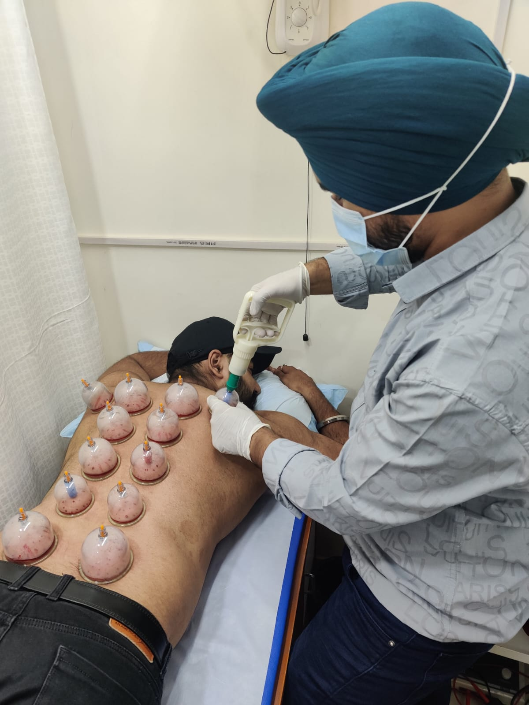
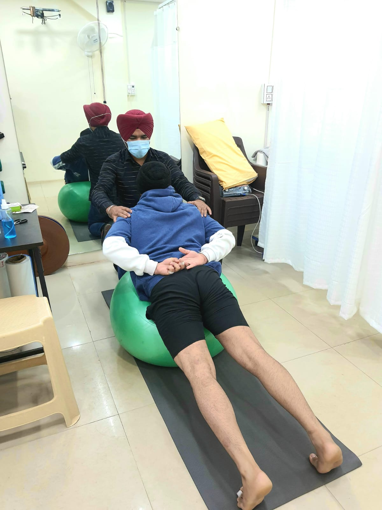

Our evidence-based care combines modern equipment with hands-on therapeutic expertise to relieve pain, restore mobility, enhance performance and improve quality of life.
State-of-the-art modalities to reduce pain, improve circulation, support tissue healing and accelerate recovery after injury, surgery or prolonged inactivity.
Specialised hands-on techniques and customised therapeutic exercise to restore joint mobility, ease muscle tension, improve posture and build functional strength.
Advanced treatment options for muscular pain, trigger points, movement restrictions and sports-related conditions—designed to support relief and recovery without restricting mobility.

Our certified cupping therapy is used as part of a personalised recovery plan to support circulation, ease muscular tightness and promote pain relief. Your physiotherapist will assess whether it is appropriate for your condition and goals.
Comprehensive programmes for bone, joint, ligament, tendon and muscle conditions—including post-fracture care and safe, structured recovery after surgery.
Specialised interventions that support improved balance, coordination, mobility, strength, endurance and independence after neurological or cardiac conditions.
Performance-focused rehabilitation for athletes and professional home visits for patients who need the same standard of personalised care in comfortable surroundings.

Every session is adapted to your condition and comfort, combining skilled guidance with practical recovery techniques.